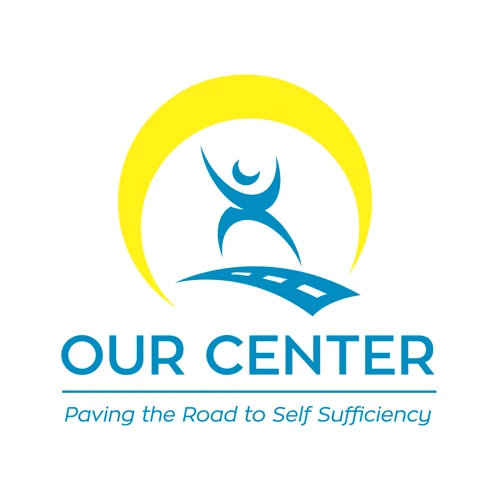
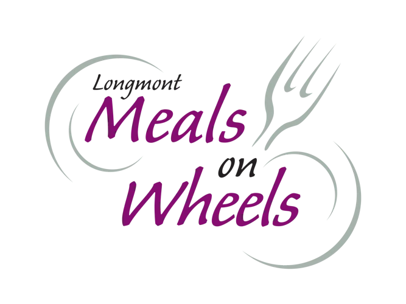
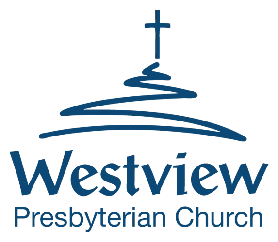
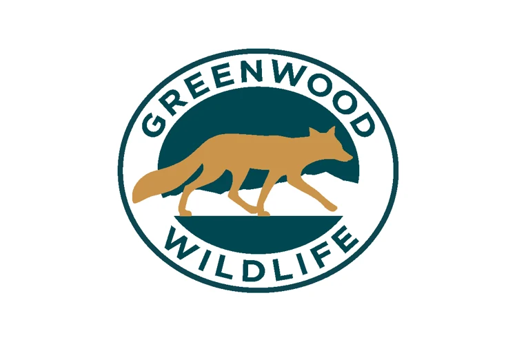

OUR Center
Help support neighbors through OUR Center’s community programs. Explore current volunteer roles and find a way to contribute your time.

Give back locally
Your time can make a difference right here at home. Meet local organizations in the Loving Longmont directory that welcome volunteer involvement, and explore ways to help through the City of Longmont.
Follow each organization’s link for current openings, age requirements, training and sign-up details.

Help support neighbors through OUR Center’s community programs. Explore current volunteer roles and find a way to contribute your time.

Help keep good food out of the landfill and get it to neighbors. Start with the volunteer interest form to learn where your help is needed.

Help prepare and package meals, deliver food to older adults and people with disabilities, or support events and special projects.

Help prepare and distribute groceries through Westview Presbyterian Church’s ROUND PANTRY. Check the volunteer page for available shifts and tasks.
Support a local food bank serving neighbors facing difficult times. Contact the food-bank team through its official page to ask about volunteering.
Explore volunteer programs supporting shelter animals and behind-the-scenes operations. Choose the program that fits your age and interests.
Support rescued horses through a structured volunteer program. Review the rescue’s training and commitment requirements before applying.

Give your time to a local sanctuary for rescued farm animals. Learn about getting involved and the volunteer application process.

Support local wildlife through animal-care, transport, education, outreach or other volunteer roles. Greenwood provides role-specific requirements and training information.
Help older neighbors stay independent through volunteer-powered services such as grocery assistance, simple home repairs, yard work and rides.

Support art and creativity in Longmont through the Firehouse’s volunteer programs. No experience is required, and training is offered.
Connect with Longmont’s volunteer-driven makerspace. Ask the team how your skills can support its shops, classes and creative community.
More ways to give back
Find opportunities with parks and trails, the library, museum, recreation, senior services, sustainability, public safety, youth programs and community boards. The City’s directory connects you with individual programs so you can find a fit for your interests and availability.
Explore City volunteer opportunities ↗